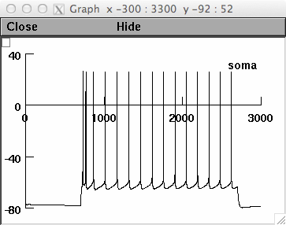

Author: Etay Hay, 2013 Reference: Preserving axosomatic spiking features despite diverse dendritic morphology (Hay et al., 2013, J. Neurophysiology) This model was contributed by its author, Etay Hay. Usage: Either auto-launch from ModelDB or download and extract the archive and compile the mod files (with mknrndll (mswin and mac, or nrnivmodl (linux/unix)) and then start the simulation by the file mosinit.hoc which calls step_current_firing_scaling.hoc which provides a: Simulation of step current injection with or without scaling ion channel densities with conductance load (rho). Parameters for the user to play with: 1. scaleYN - 1 or 0 - to scale ion channel densities with conductance load (rho) or not. 2. morphology_file - determines which morphology to simulate (cell4, 21, 26 or 28) After the simulation is complete (brief run) something similar to this should be displayed:  20130717 Minor correction applied to mRin.hoc, in the placement of current injection to the axon/soma. The only consequence of this correction is a slightly different value of rho_axon (e.g. 182 vs. 187 for the exemplar cell), which has no significant effect on the results.